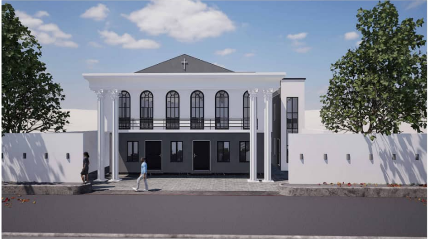
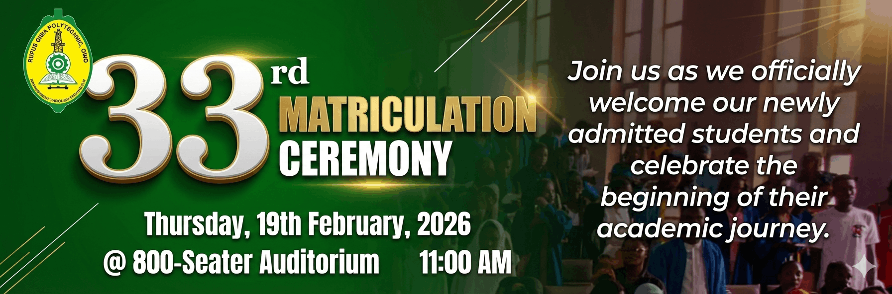
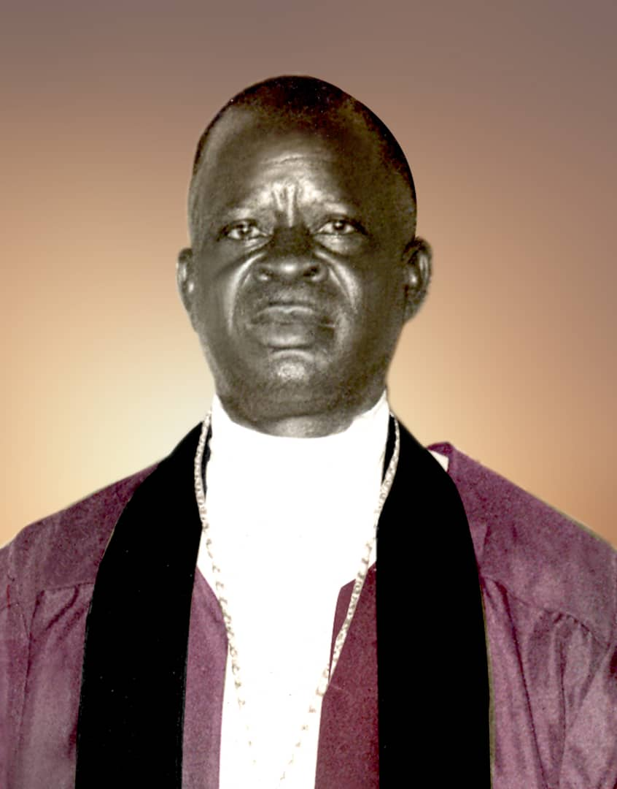

Youth Ministry
Helping young people grow in faith and purpose.

“One House, One Unit”
A family of believers committed to worship, prayer, fellowship and taking God's work to greater heights.

Ebenezer Christ Church of the Lord Aladura has a rich history of faith and service that stretches back several decades. The work of the church began through the ministry of its founder, His Eminence Primate (Dr.) Erastus Adeshina Oduneye (J.P.).
From humble beginnings in Mushin, Lagos, the church grew into a family of worshippers with branches in Lagos and Ogun States, continuing its commitment to prayer, fellowship and the work of God.
Explore Our History →A journey of faith from the early ministry of our founder to the church we know today.

His Eminence Primate (Dr.) Erastus Adeshina Oduneye (J.P.) was born in June 1911 at Itun Oke – Agodi Ikala, Ijebu Mushin.
On 30 May 1954, Erastus Adeshina Oduneye was ordained Prophet by Late Reverend Prophet James Oladimeji Coker.
Church services began at 37 Coker Street, Mushin, Lagos. The early congregation included the founder, Reverend Mother Victoria Oladunni Oduneye and Mr. and Mrs. Adekomaya.
The first Harvest Thanksgiving was later held in a hall opposite Adebeshin Street, Mushin.
The foundation of the church building was laid on 21 March 1961 by Prophet E.A. Odufuwa of Emmanuel Salem Church.
The church building was completed in late 1963 and officially dedicated on 4 July 1964 by Bishop J.O. Orebanjo of Church of the Lord, Ijebu Ode.
The cathedral was conceived at Ikala, Ijebu Mushin in 1972. Its foundation was laid in 1974 and it was completed before the Holy Mount of Salvation Convention in September 1979.
His Eminence Primate (Dr.) Erastus Adeshina Oduneye died on 11 September 1995 and was buried on 2 December 1995.
His Grace Primate Andrew Adegbuyi (J.P.) was installed as the second Primate in 1996.
Prophet Oluwasegun Alebiosu Oduneye (J.P.) was ordained as the third Primate on 7 February 2015.
Primate Oluwasegun Alebiosu Oduneye (J.P.) passed away on 5 July 2021.
On 24 April 2023, His Eminence Primate Cornelius Adebola Adelaja was ordained as the fourth Primate.
The founder of Ebenezer Christ Church of the Lord Aladura dedicated his life to the work of God, prayer, service and the growth of the church.
His legacy continues through the generations of leaders, ministers and members who carry the work forward.

Founder & First Primate
There is a place for everyone to worship, serve, learn and grow.
Helping young people grow in faith and purpose.
Creating a strong foundation of faith for children.
Using music and worship to glorify God.
A ministry committed to prayer and spiritual growth.
Building men through fellowship and service.
Encouraging women through faith and fellowship.
Growing together through the study of God's Word.
Sharing the message of Christ with others.
Worship with us at any of our locations across Lagos and Ogun States.

Church Location: {{.Address}}
{{if .Pastor}}
Prophet Name: {{.Pastor}}
Phone Number: {{.Phone}}
{{end}}Meet the prophets, prophetesses and pastors serving Ebenezer Christ Church of the Lord.
{{else}}
{{.Position}}
{{.Branch}}
Stay connected with our upcoming services, conventions and special programmes.
{{.Description}}
Location: {{.Location}}
No upcoming events at the moment.
{{end}}Access messages, teachings and spiritual resources from Ebenezer Christ Church of the Lord Aladura.
View SermonsExplore sermons, teachings and messages from Ebenezer Christ Church of the Lord Aladura.
Your generosity helps support the work of the church, ministry activities and the community.
Thank you for supporting the work of Ebenezer Christ Church of the Lord Aladura. Your generosity helps us serve God, support ministry activities and reach our community.
Bank details will be provided here by the church.
Account Name To be provided Account Number To be provided Bank To be providedYou can also give during any of our church services at the headquarters or any of our branches.
Find a BranchHave a question, need prayer or want to learn more about our church? Reach out to us.
Have a question about our church, history, services, ministries or branches? Ask our AI assistant.